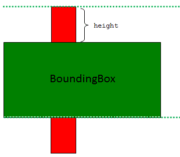
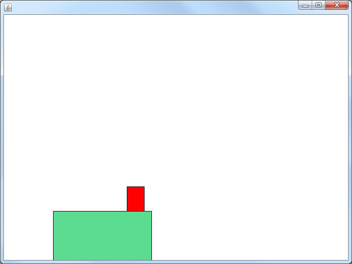
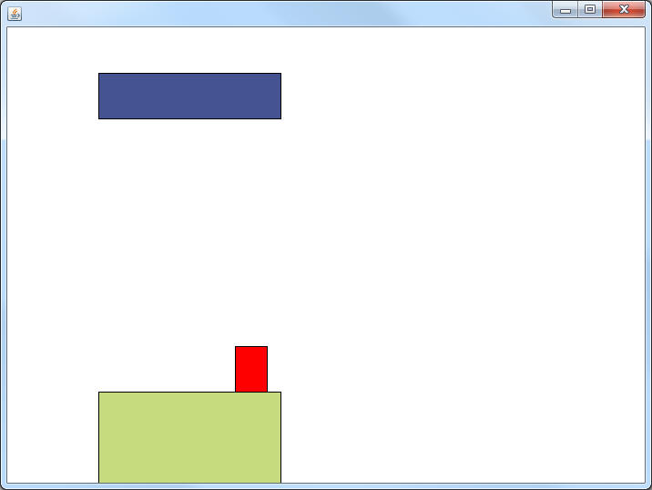

Block Collision
So far the PlatformCanvas is set up so that the JumpMan will fall downward forever. It's time to put some obstacles in the way.
Create a new class named Block. Add 4 ints as instance fields for the x, y, width, and height. You may also add r,g, and b or a Color variable if you want the blocks to have different colors.
Make a constructor for Block that takes in 4 ints (tmpX,tmpY,tmpW,tmpH) and assigns them to the instance fields. This is where you would randomize the Color
Add a paintSelf method that will paint a Rectangle using the instance fields.
Adding to the PlatformCanvas:
Now it's time to set up the Blocks in a similar way to how we did the Asteroids and Bullets in the Asteroids Game:
- Add an ArrayList<Block> to the instance field
- In the constructor, construct a new ArrayList<Block> into that instance field. After that, add a new Block(0,400,200,100) to that ArrayList
- In paintCanvas, loop through all of the Blocks and call their paintSelf method. Look to your Asteroids if you need to remember.
Run your program to test it out. All you're looking for is for the Block to appear. It won't interact yet, but you should see a rectangle on the screen.
Collision:
First you need to add a getHitBox method to both the JumpMan and the Block class. Again, these are identical to the methods that you added in the Asteroids project.
Now add the following method to the JumpMan class.
public void yAlign(HitBox r)
This method's job is to change the JumpMan's y so that it is either just on top or just below the HitBox. There are two possibilities. If the gravity is 0 or greater (the JumpMan is falling), then you should set the y to be the HitBox's y minus the JumpMan's height. If the gravity is less than 0, set the y to the HitBox's y plus the HitBox's height. Either way the gravity should always be set to 0.

Now that we can check for collision and align the JumpMan with a HitBox, in the onTimerTick method of the Canvas you should loop through every Block, extract its hitBox, and call the JumpMan's yAlign method if they are overlapping.
Test out your program. The JumpMan should land on the top of the previously placed Block.

Now it's time to test the other side. In the Canvas's constructor add another Block with the parameters (100,50,200,50). This will add a Block above the JumpMan. Hit the up-arrow multiple times to test if the new Block will stop the JumpMan from continuing upward.
